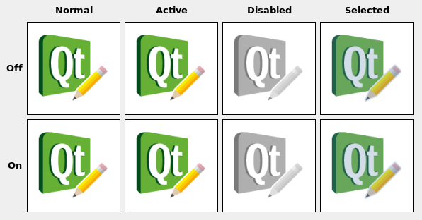

| Home · All Classes · Modules · QSS HELP · QSS 案例 · VER007 HOME |
该QIcon则类提供了在不同的模式和状态可缩放图标。More...
该QIcon则类提供了在不同的模式和状态可缩放图标。
一个QIcon则可以生成一组像素图的它被赋予较小的，更大的，积极的，和残疾人像素图。这样的像素图所使用的Qt控件显示代表一个特定动作的图标。
最简单的使用QIcon则是创建一个从QPixmap文件或资源，然后使用它，可以让Qt的制定所有必需的图标样式和大小。例如：
QToolButton *button = new QToolButton; button->setIcon(QIcon("open.xpm"));
要撤消QIcon则，只需在其位置空图标：
button->setIcon(QIcon());
使用QImageReader.supportedImageFormats（）和QImageWriter.supportedImageFormats（ ）函数来获取支持的文件格式的完整列表。
当您使用像素图（撷取像素图QSize，模式，状态） ，且没有像素映射为这个给定的大小，模式和状态已经被添加以addFile（）或addPixmap（），然后QIcon则将会产生1的飞行。该像素图的产生发生在一个QIconEngineV2。默认引擎秤像素映射下来，如果需要，但再也没有起来，并使用当前样式来计算伤残外观。通过使用自定义图标的引擎，您可以自定义生成图标的每一个方面。同QIconEnginePluginV2它可以注册不同的图标引擎不同的文件后缀，从而有可能为第三方提供额外的图标引擎包括那些使用Qt 。
Note:由于Qt 4.2中，支持SVG图标引擎包括在内。
如果你自己写的小工具，有一个选项来设置一个小像素映射，可以考虑允许QIcon则到该像素图进行设置。 Qt的类QToolButton是这样的一个部件的一个例子。
提供一种方法来设置QIcon则，当你绘制图标，选择任何像素图是适合你的部件的当前状态。例如：
void MyWidget.drawIcon(QPainter *painter, QPoint pos) { QPixmap pixmap = icon.pixmap(QSize(22, 22), isEnabled() ? QIcon.Normal : QIcon.Disabled, isChecked() ? QIcon.On : QIcon.Off); painter->drawPixmap(pos, pixmap); }
您可能也使的使用Active模式，或许让你的widgetActive当鼠标悬停在小部件（见QWidget.enterEvent（ ） ） ，同时按下鼠标时以待释放，这将激活该功能，或当它是当前选定的项目。如果小部件可以切换，在“开”模式可能被用来绘制不同的图标。

该枚举类型描述了其中一个像素图的目的是要使用的模式。当前定义的模式有：
| Constant | Value | Description |
|---|---|---|
| QIcon.Normal | 0 | 显示的像素图，当用户不与图标交互的，而是由图标表示的功能是可用的。 |
| QIcon.Disabled | 1 | 显示像素映射时由图标表示的功能不可用。 |
| QIcon.Active | 2 | 显示像素映射时由图标表示的功能是提供用户与交互图标，例如，移动鼠标，或单击它。 |
| QIcon.Selected | 3 | 显示像素映射时由图标表示该项目被选中。 |
该枚举描述了其中一个像素图的目的是要使用的状态。该state可以是：
| Constant | Value | Description |
|---|---|---|
| QIcon.Off | 1 | 显示像素图时，部件是在“关”的状态 |
| QIcon.On | 0 | 显示像素图时，部件是在一个“开”状态 |
构造一个空的图标。
从构造一个图标pixmap。
构造的副本other。这是非常快的。
构造一个图标从文件中给定的fileName。该文件将被按需加载。
If fileName包含相对路径（例如，文件名只）的相关文件，必须找到相对于运行时的工作目录。
文件名可以是指在磁盘上或对应用程序的嵌入资源之一实际的文件。请参阅Resource System概述有关如何嵌入在应用程序的可执行映像和其他资源文件的详细信息。
使用QImageReader.supportedImageFormats（）和QImageWriter.supportedImageFormats（ ）函数来获取支持的文件格式的完整列表。
该engine说法有它的所有权转移给Qt的。
创建一个具有特定图标的图标engine。图标采用了发动机的所有权。
该engine说法有它的所有权转移给Qt的。
创建一个具有特定图标的图标engine。图标采用了发动机的所有权。
返回图标的实际大小为所请求的size，mode和state。其结果可能会小于要求的，但从来没有较大。
增加了一个图像从文件用给定的fileName的图标，作为一个专业化的size，mode和state。该文件将被按需加载。注：自定义图标引擎可以自由地忽略额外添加的像素图。
If fileName包含相对路径（例如，文件名只）的相关文件，必须找到相对于运行时的工作目录。
文件名可以是指在磁盘上或对应用程序的嵌入资源之一实际的文件。请参阅Resource System概述有关如何嵌入在应用程序的可执行映像和其他资源文件的详细信息。
使用QImageReader.supportedImageFormats（）和QImageWriter.supportedImageFormats（ ）函数来获取支持的文件格式的完整列表。
注意：当您添加一个非空的文件名到QIcon，图标变为非空，即使该文件不存在或指向一个损坏的文件。
See also addPixmap（ ） 。
添加pixmap的图标，作为一个专业化的mode和state。
自定义图标的引擎可以自由地忽略额外添加的像素图。
See also addFile（ ） 。
返回可用图标大小的列表指定mode和state。
此功能被引入Qt的4.5 。
返回一个数字，用于标识此内容QIcon对象。不同QIcon对象可以具有相同的密钥，如果它们指的是相同的内容。
该cacheKey （ ）会改变时，该图标是通过改变addPixmap（）或addFile（ ） 。
缓存键是最有用与缓存结合使用。
此功能被引入Qt的4.3 。
See also QPixmap.cacheKey（ ） 。
返回QIcon对应name在当前的图标主题。如果没有这样的图标在当前主题中找到fallback返回来代替。
Freedesktop的图标规格及命名规范的最新版本可以在这里获得：
来从当前的图标主题的图标：
QIcon undoicon = QIcon.fromTheme("edit-undo");
或者，如果你想提供一个保证回退不支持主题图标的平台，您可以使用第二个参数：
QIcon undoicon = QIcon.fromTheme("edit-undo", QIcon(":/undo.png"));
Note:默认情况下，只有X11将支持主题图标。为了使用在Mac和Windows主题图标，你将不得不捆绑一个兼容的主题之一，您themeSearchPaths（ ），并设置适当的themeName（ ） 。
此功能被引入Qt的4.6 。
See also themeName（ ）setThemeName（）和themeSearchPaths（ ） 。
返回True如果有一个图标供name在当前的图标主题，否则返回False 。
此功能被引入Qt的4.6 。
See also themeSearchPaths（ ）fromTheme（）和setThemeName（ ） 。
返回True如果该图标为空，否则返回False 。
图标是空的，如果它既不具有像素图，也不是一个文件名。
注意：即使是一个非空的图标可能无法建立有效像素映射，如。如果文件不存在或无法读取。
返回（如果可用）来创建图标，名称。
根据创建图标的方式，它可能有一个相关的名称。这是用于与创建的图标的情况下fromTheme（）或图标用QIconEngine支撑QIconEngineV2.IconNameHook。
此功能被引入Qt的4.7 。
See also fromTheme（）和QIconEngine。
使用painter绘制图标与指定的alignment，需要mode和state成长方形rect。
See also actualSize（）和pixmap（ ） 。
这是一个重载函数。
绘制图标进入矩形QRect（x，y，w，h） 。
返回一个像素图的要求size，mode和state，生成1如果必要的。像素图可能小于要求的，但从来没有较大。
See also setPixmap（ ）actualSize（）和paint（ ） 。
设置当前的图标主题name。
该name应该对应于包含描述它的内容的index.theme文件中的themeSearchPath目录名（ ） 。
此功能被引入Qt的4.6 。
See also themeSearchPaths（）和themeName（ ） 。
设置为图标主题的搜索路径paths。
此功能被引入Qt的4.6 。
See also themeSearchPaths（ ）fromTheme（）和setThemeName（ ） 。
交换图标other与此图标。这个操作是非常快的，而且永远不会。
此功能被引入Qt的4.8 。
返回当前的图标主题的名称。
在X11上，当前图标主题取决于您的桌面设置。在其他平台上它不是默认设置。
此功能被引入Qt的4.6 。
See also setThemeName（ ）themeSearchPaths（ ）fromTheme（）和hasThemeIcon（ ） 。
返回图标主题的搜索路径。
默认值将取决于平台：
在X11 ，搜索路径将如果有使用XDG_DATA_DIRS环境变量。
默认情况下，所有的平台都会有资源目录:\icons作为后备。您可以使用“ RCC项目” ，以从你的图标主题的资源文件。
此功能被引入Qt的4.6 。
See also setThemeSearchPaths（ ）fromTheme（）和setThemeName（ ） 。
| PyQt 4.10.3 for X11 | Copyright © Riverbank Computing Ltd and Nokia 2012 | Qt 4.8.5 |